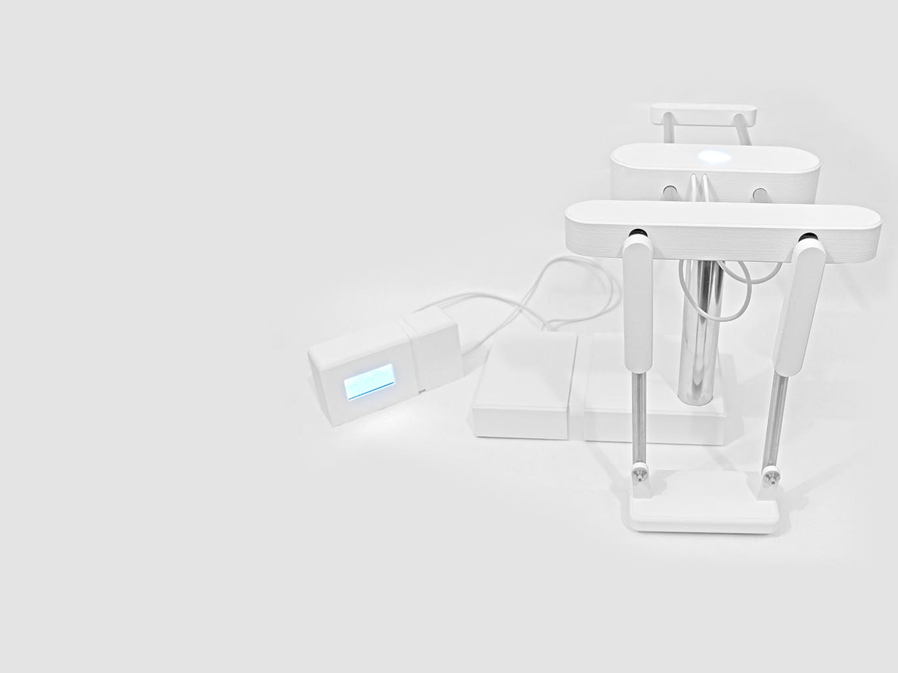
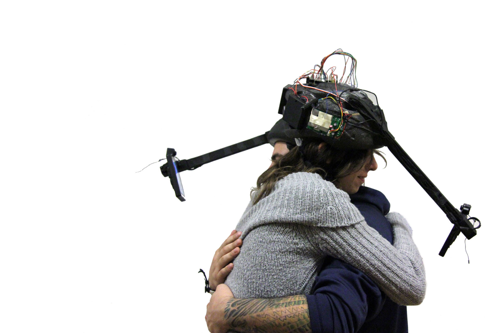

Meta · Wearables

Meta Ray-Ban Smart Glasses
Industrial Design Architect / Hardware Prototyper. I prototype how the glasses should behave — what a tap, a look, or a voice command does, and what the wearer sees back.
Case study →Dan Chen — Seattle · AI Product Designer & Hardware Prototyper
AI Product Designer at Meta, working on Ray-Ban smart glasses. 13 years across hardware, software, and connected experiences.
See latest builds ↓ Selected work Résumé (PDF)

Best of @danchen.me — updated 20 Nov 2026
Not the newest — the ones that traveled furthest. Ranked by lifetime Views on @danchen.me, from the year review (Nov 2025 – Nov 2026).
Selected work
Six projects, picked because they changed how I think. The full archive lives at dankc.com.
Meta · Wearables
Industrial Design Architect / Hardware Prototyper. I prototype how the glasses should behave — what a tap, a look, or a voice command does, and what the wearer sees back.
Case study →Culture Biosciences · Senior Engineer

Senior Engineer. I designed the modular bioreactors and the auto-sampling hardware — the machines that run the experiments, and the human-factors work around them.
Case study →Art & design

Desktop robots that enhance feelings of team spirit — comfort objects, made to be patted, held, and lived with.
Case study →Art & design

When we hug someone, we can’t see each other’s face. A robot that explores that gap — touch, distance, and attention.
Case study →Exhibition · Vitra Design Museum

An interactive installation for a final rite of passage, shown in Hello Robot at the Vitra Design Museum.
Case study →Lab experiment

A 3-axis CNC machine, built from cardboard. The “Hello World” of making machines that make things.
Case study →Now — weekly builds
ESP32, Web Bluetooth, and LLMs as a prototyping partner. I build it, film it, and ask makers and artists what to change next.
About

I’m a designer and engineer in Seattle — MIT Media Lab, RISD, UConn — 13 years across hardware, software, and connected things. Meta now, working on wearables; Culture Biosciences, IDEO, Johnson & Johnson, and MIT Lifelong Kindergarten before that. I’ve spoken at TEDx Vienna and TEDx Bologna, shown work at Vitra, MAK Wien, Design Museum Gent, Seoul Museum of Art, and Ars Electronica, and been written up in CNET, The Verge, Engadget, Mashable, and HuffPost.
What I actually do: figure out how a person and a machine should understand each other, then build the thing that proves it — usually in a week, usually with an ESP32, usually filmed.
Contact
Want to work together, or talk about an AI product design role? Email me — I read everything.